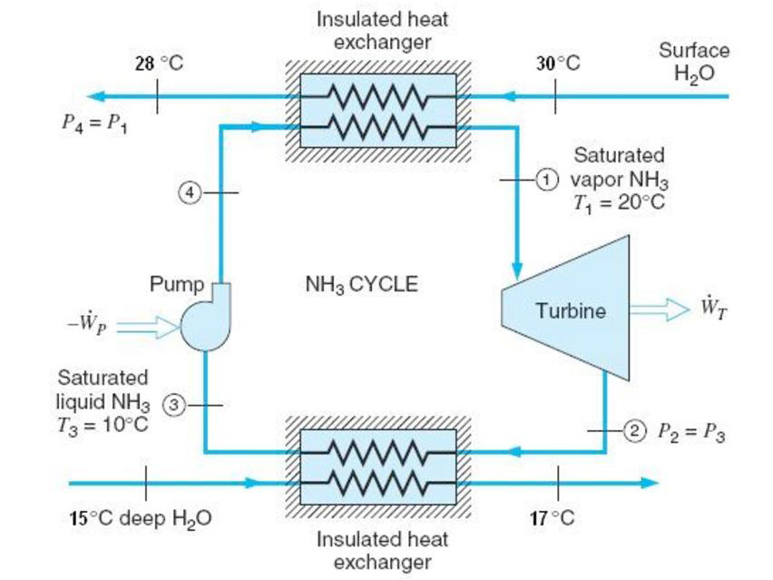
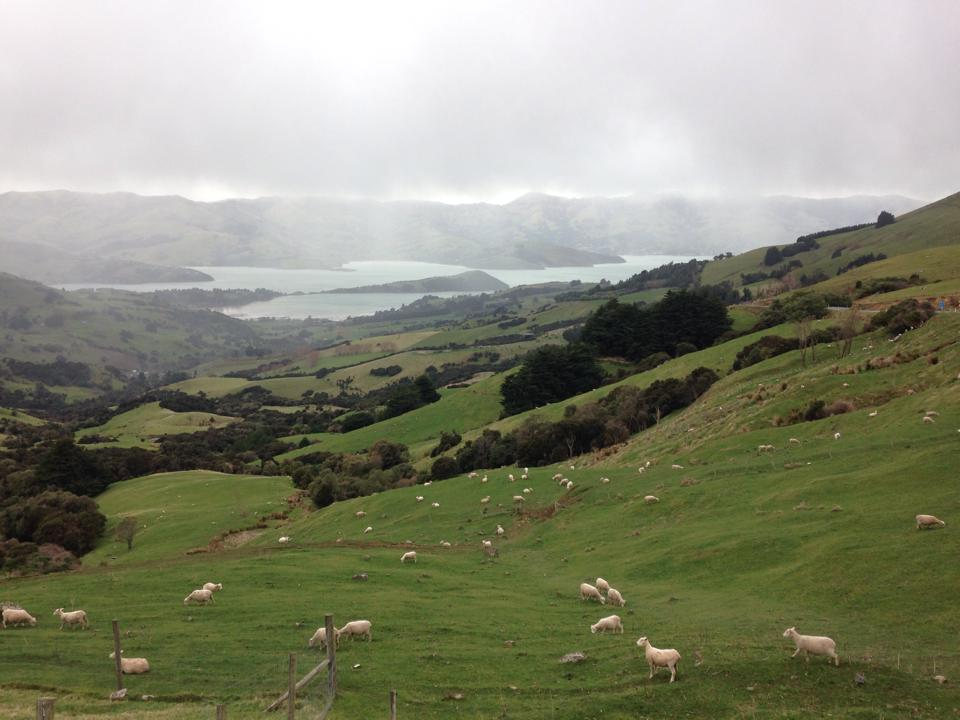
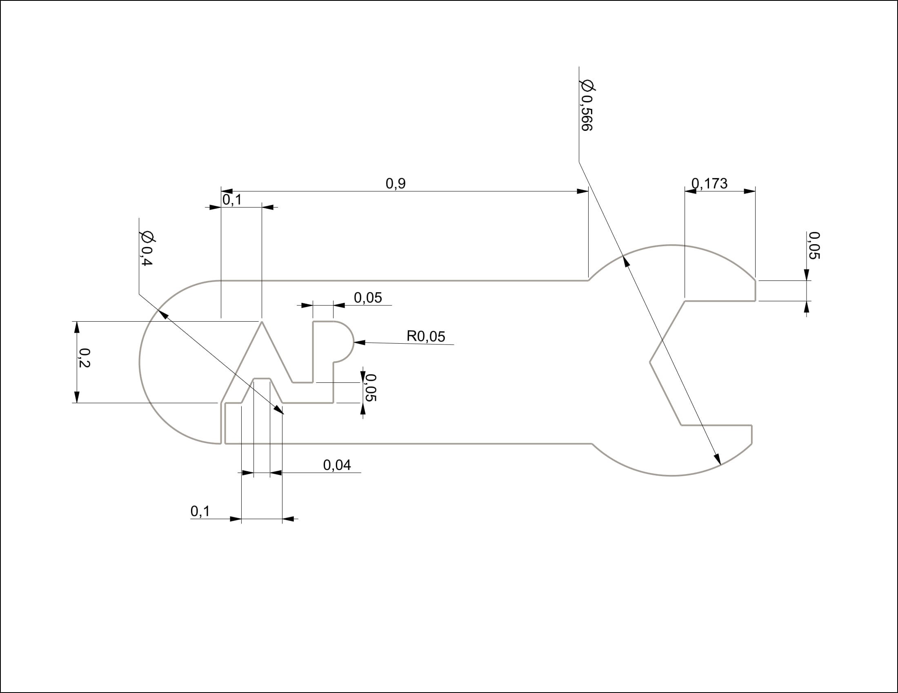
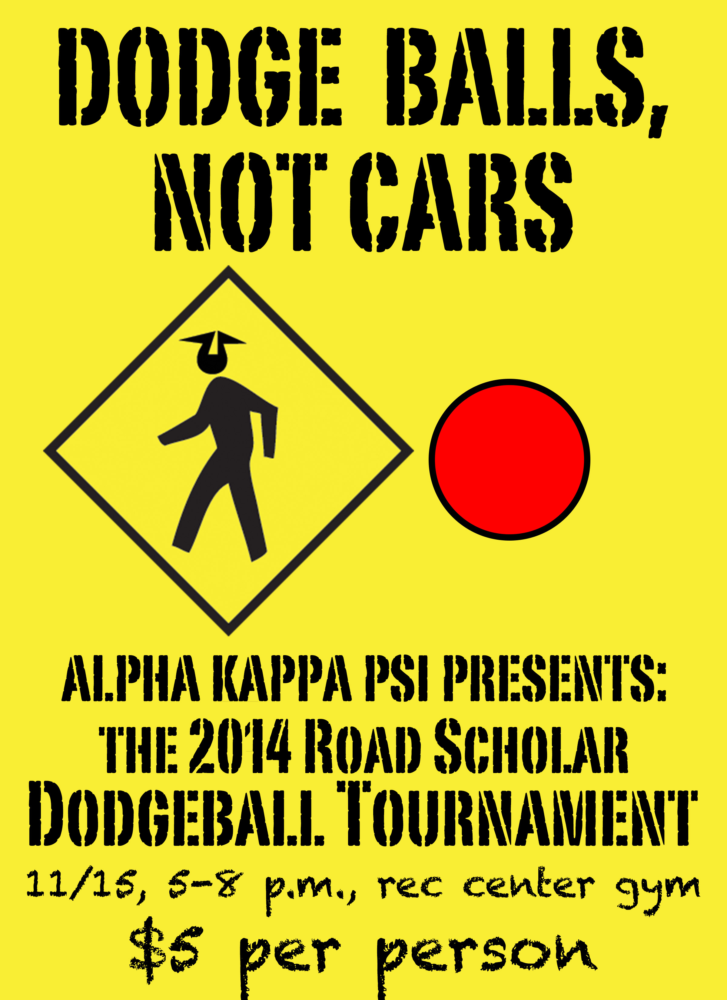
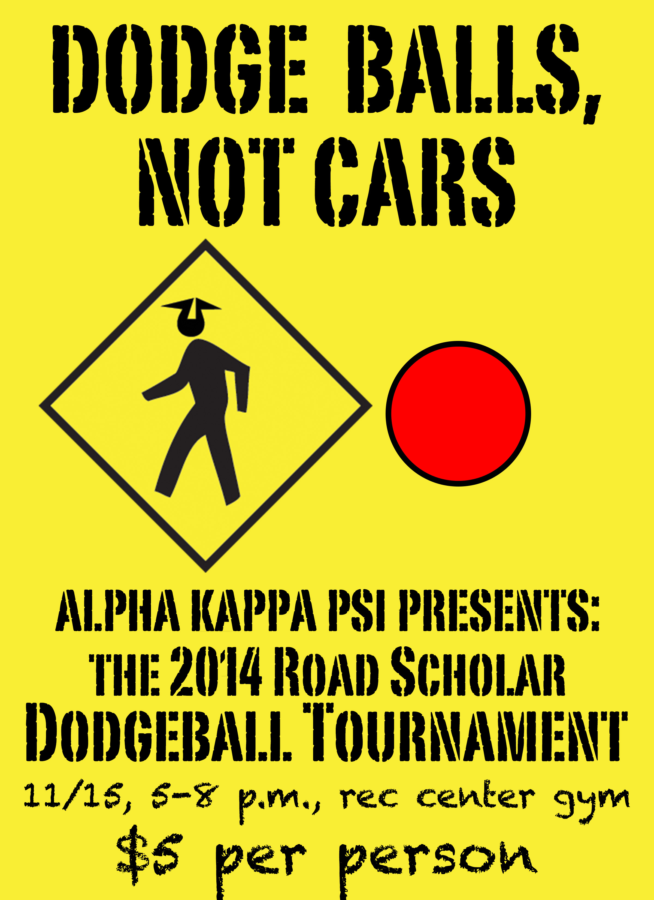
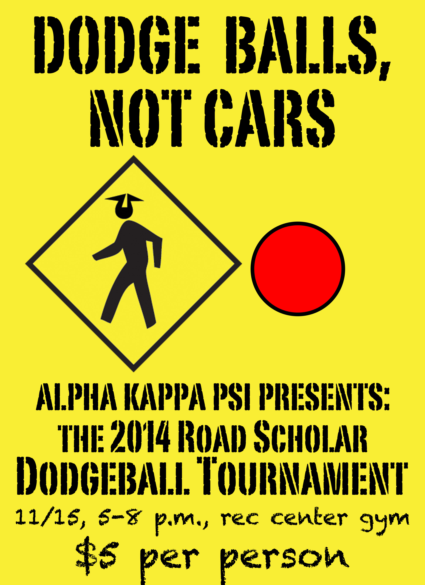

In my computer-aided design class, one of our final projects was to design an (admittedly useless) gearbox using only the specifications of one tooth of the rack. The exercise was helpful for learning some of the finer points of our CAD software, like how to design properly interfacing parts or parts from materials like sheet metal.
Research Scholarship

Early on in college, my favorite classes were in the thermofluids branch of mechanical engineering. After taking Thermodynamics my sophomore year, I wanted to go deeper into the subject, so I applied and was accepted to the Vredenburg Scholarship at JHU, which allows engineering students to spend a summer abroad in research or volunteer positions. I assisted a team at the University of Canterbury in Christchurch, New Zealand researching power systems used to harvest geothermal energy and other low power renewable energy sources.

Other than being part of some very cool research, the scholarship gave me the chance to see a lot of an amazing country. Here's a photo I took near Akaroa, New Zealand while I was travelling around after my research was over.
CNC G-Code

In my manufacturing class I learned the basics of designing for various manufacturing techniques. One example was learning to write 2-dimensional G-codes for CNC machined parts.
Dodgeball Sponsorships
As a new member of Alpha Kappa Psi, the coed business fraternity at JHU, my fellow pledges and I were tasked with raising funds for the fraternity. Traditionally, pledge classes had raised funds by selling individual tickets to an event or raffle, and our class chose to hold a dodgeball tournament. By tapping into contacts I had from my time working at the JHU Newsletter, I was able to get our tournament sponsored by the University's Office of Summer Programs. They came by the tournament to hand out fliers and tell students about summer course offerings, and in exchange they covered over half of our fundraising goal.
For the chapter's second dodgeball tournament the next semester, I went to the University's Office of Communications, who wanted to get the word out about their "Road Scholar" campaign stressing the importance of pedestrian safety. I made a deal twice as lucrative as the last to sponsor the tournament. What was great was that other members of the chapter were able to maintain the relationship with Summer Session that I had established and secure an additional sponsorship for a different chapter event.

 For the chapter's second dodgeball tournament the next semester, I went to the University's Office of Communications, who wanted to get the word out about their "Road Scholar" campaign stressing the importance of pedestrian safety. I made a deal twice as lucrative as the last to sponsor the tournament. What was great was that other members of the chapter were able to maintain the relationship with Summer Session that I had established and secure an additional sponsorship for a different chapter event.

For the chapter's second dodgeball tournament the next semester, I went to the University's Office of Communications, who wanted to get the word out about their "Road Scholar" campaign stressing the importance of pedestrian safety. I made a deal twice as lucrative as the last to sponsor the tournament. What was great was that other members of the chapter were able to maintain the relationship with Summer Session that I had established and secure an additional sponsorship for a different chapter event.
